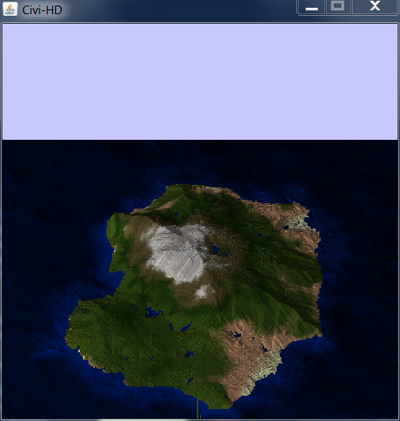

Generates planets, islands, galaxies, and more!
Home | Planet Gen | Island Gen | Civi HD | Civi in Space | Maps
While most of my other programs generate terrain on spheres using flood fill and random-walks, this planar terrain generator makes use of multiple noise algorithms for quick, realistic-looking islands. What's more, the planar nature of this algorithm allows for three-dimensional isometric views.
Download it here!
 <
This program makes much heavier use of noise functions than my other programs do. First, the heightmap is created using the diamond-square algorithm, with the center and corners already initialized. Next, the climate is generated using fractal noise. I simulate air density by making higher altitudes colder, and the orographic effect by having moisture blow in from the left and "fall" onto the landscape based on the altitude of the landscape at that point. The moisture genrally runs out about halfway through, leading to islands with more green on the left side and more dryness on the right side.
I then create ridges and valleys using a hydraulic algorithm of my own design. First, a constant amount of water is rained down onto the terrain. Next, that water flows downhill; an amount of water based on the slope of the land and the amount of water present is divided up proportionally among all downhill adjacent tiles. Velocity is calculated based on the depth of water, and how much water moved left, right, up, and down. If the magnitude of the velocity is high enough, a block of land is eroded away. Next, there is an erosion simulation where land flows similarly to water, but only once the slope of the land breaks a certain threshold.
Finally, the color of the terrain is decided based on a combination of the slope, temperature, and rainfall.